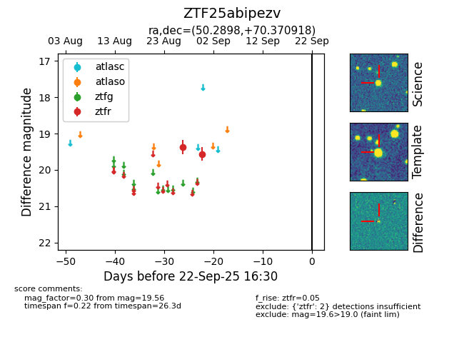

FINK: ZTF25abipezv
Lasair: ZTF25abipezv
ALeRCE: ZTF25abipezv
ZTF25abipezv (ztf,fink)
equatorial (ra, dec) = (50.2898,+70.37092)
galactic (l, b) = (134.9400,+11.07375)

last ztfr=19.56
2 ztfr detections